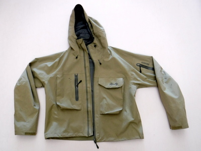
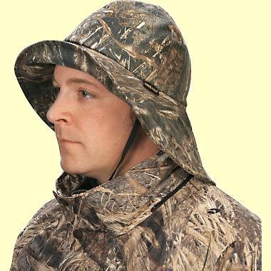
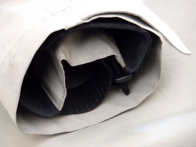

コラム
雨アメふれふれ、雨具遍歴
僕の故郷、愛知県東三河地方の山間部では、アマゴのことをアメノウオ、縮めてアメと呼ぶ。漢字で書くと「雨の魚」である。また、北海道には、アメマス、「雨鱒」という魚もいる。アメマスのことはよく知らないが、アメノウオは文字通り雨の魚であって、シトシトとそぼ降るような雨の天気や、雨後の増水時によく釣れるのである。
そんなアメノウオを釣ることに夢中になって長い年月が過ぎた。
ところで、開高健さんが編んだ釣りの本に「雨の日の釣り師のために」という名著がある。
出版元のTBSブリタニカ編集部によれば、この本は、
David Pownall 氏と Gareth Pownall 氏というイギリス人父子によって編纂された「The Fisherman's Bedside Book」という65篇の釣り文学アンソロジーを、開高健さんが30篇に厳選し、日本の３篇を含む５篇を新たに加えて、35篇の傑作選とした。
画像は Amazon.co.uk より引用
との注釈がある。そして、開高さんの巻頭言には、
雨も愉し
開高 健雨になると魚はどこかへ消える。降る直前にはシケを予知して食いだめをしておこうという心理(?)からか、ひとしきりよくあたる。降りはじめには新しい酸素を歓迎してか、ちょっとはしゃぐ。しかし、本降りになると水温が下がるので散らばってしまうのである。虫は葉かげにかくれる。鳥は森へ逃げる。獣は穴で眠る。というぐあいだから、フイッシャーマンもバードウォッチャーもロッジにこもるしかない。だからこの本の表題は『雨の日の釣師のために』としたけれど、"釣師"を"ナチュラリスツ"と変えてもよろしいのである。
と書いてあって、昔初めて読んだ時には、なるほどなぁ.....と感じ入ったものだった。それから年を経て、雨が本降りになって、こりゃちょっとマズイかな？ と感じるくらいに増水してきた頃合いがよく釣れることを何回も経験したので、僭越ではあるけれど、『雨の日こそロッジから出て釣りに行くべし！』ということで、良い釣果を上げたいのであれば、雨中で釣りをすることが必須であるという視点から、この記事では、僕の雨具遍歴と雨具選びについて述べてみたい。
初めてアメノウオを釣ったのは、エサ釣りで、小学４年生の春である。以来、病みつきとなり、高専の１年生の春休みには、ルアーフィッシングを覚えた。この頃には雨の中で釣りをするほど根性も無かったし、お金も無かったので、雨具を買うほどのことは無かった。高専の３年生の夏休みに、建築現場のアルバイトをしてお金が貯まったので、フェンウィックのスピニングロッドとミッチェルの４０９を買った。そして冬休みにもバイトをして、欲しかった雨具を手に入れた。ピーターストームの３／４レングス・レインコートである。これは当時流行っていた雑誌、popeye に載っていた、DAVOS というアウトドアショップで買ったものである。価格は３万円を越えていたと思う。高校生にとっては大きな買い物であった。
この雨具の最大の特徴は、バックフレックスという防水透湿性のある素材であった。ゴアテックスが一般化する以前である1980年においては、唯一の透湿性素材だったと思う。生地の表面はなめらかで、裏地は細かなメッシュだったような気がするが、なにぶん大昔のことなので、記憶があいまいである。もう１つの特徴は、雨具の丈であり、３／４レングスという膝上あたりまでの長さのコートであった。当時は、釣りをするのに今のようなチェストハイウェーダーは無かったので、太腿までの長さのバカ長靴を履いていた。だから、雨具で膝上までがカバーできれば好都合だったのである。色は濃紺。売り物の透湿性はまずまず快適な雨中での釣りをもたらしてくれた。前面の開きはファスナーと、それを覆うフラップのマジックテープ止めだった。ただ、袖口はごく普通のマジックテープ止めだったので、ここから雨が浸入してシャツの袖が濡れるのが欠点だった。両サイドにはポケットが１つずつあったように思う。
この雨具での思い出は、当時よく通っていた町内の川でのルアー釣りである。たぶん夏休みだったと思うのだが、しとしとと雨の降る中、砂防堰堤のバックウォーターでスピナーを引っ張っていると、水中に沈んだ杉の枝の中から型の良いアメノウオが飛び出してきたことを、今でもよく覚えている。長い距離の遡行にも、ムレる事無く雨を防いでくれた。
惜しい事にこのレインコートは、よく乾かさずにしまっておいたことが原因だと思うのだが、生地が細かくひび割れてしまい、雨具としての防水性をまったく失ってしまった。何年使ったかは忘れたが、おそらく３年ほどは活躍してくれたと思う。
大学に入り、釣り同好会の会員として、奥只見の山奥を釣り歩いていたのが、1983年からのことである。この頃の雨具は、濃緑色のモンベルのハイパロンレインコートであった。価格は8000円程度。豊橋市の登山用品店、モンタニアで買ったと思う。やはり丈が長く、バカ長靴の上からすっぽりと覆ってくれるこのコートにはずいぶん助けられた。ただ、ハイパロンは防水性と耐久性は文句無いのであるが、透湿性がまったく無いために、中は相当蒸れた。また、袖口からの雨水の浸入にも相変わらず悩まされた。しかし、濃い緑色のこのコートは、山奥の渓流釣りでは理想的な色合いをしており、長年雨中の釣りのお供となってくれた。畳むとコンパクトになり、携帯性にも優れていたので、いつもフィッシングベストの背中に入れて釣りをしたものである。フロント部分はファスナーとボタン止めであった。
毎年恒例となっていた奥只見での夏期キャンプでも大いに活躍してくれ、宮田先輩が37cmと35cmの大岩魚を連続して釣り上げた日にも、このレインコートをリュックに入れていたと思う。

このコートとは長く付き合い、社会人になってからも使っていたので、７年ほどお世話になったことになる。
大学を卒業して社会人となり、ニュージーランド釣行の計画をした際、1996年に購入したのが、長年釣り用長靴、雨具などを作っている株式会社 双進 から出ているリバレイ・ブランドのレインジャケットである。価格は２万８千円くらいだったと思う。名古屋市の上飯田釣り具店で買ったものである。丈はやや短め、深くウェーディングしても裾が水に浸からないようなデザインである。サイズはＬＬ。ベストを着て着ぶくれするのでこのサイズでちょうど良かった。色は地味なカーキ色。ゴアテックスではないが、透湿性のある生地を使っており、縫い目にはびっしり防水テープが張られている。この生地は、防水性、透湿性ともに優れており、長時間の歩行にも蒸れることなく雨を防いでくれた。前面の開きはファスナーと、それを覆うフラップのボタン止めである。袖口も、ネオプレンとマジックテープの防水性のあるデザインであり、長年悩まされてきた水の浸入とおさらばできた。ニュージーランド南島西海岸、ウェストランドと呼ばれる地方では、とても激しく雨の降ることがあるのだが、そんな時にもこのレインジャケットはよく働いてくれた。また、肌寒い日もある夏のウェストランドでは、ウィンドブレーカーとしても着たので、実に良い釣り具である。北島のワイカト地方での２年間の釣りの間も酷使し、2009年の夏まで使っていたので、実に13年も愛用したことになる。こんなに物持ちが良くては釣り具店が困るなぁ。
2010年になり、その年の秋に計画していたニュージーランド釣行のため、雨具を新調することにした。さすがのリバレイのレインジャケットも表側の記事に細かなヒビが見られるようになっていたのだ。良く出来た製品だったので、次のもリバレイ製で探した。ほぼ同じデザインで、ゴアテックス生地の製品があったので、迷わずそれを買った。サイズは同じくＬＬ。こちらもしっかりした作りで、細部もよく考えられており、2020年現在もほとんど新品のように見えるほど耐久性に優れている。価格も、どこで買ったのかも忘れてしまった。

さて、どんな雨具にも、たいていはフードが付いている。取り外しができれば良いのだが、フードに覆われての釣りが苦手な僕は、フードを使わずに、レインハットをかぶることにしている。どうもフードをかぶると音が聞こえにくくなるし、視界もさえぎられるためである。
最初に買ったレインハットは、ピーターストームのレインコートを買ったのと同じ 1980年に、同じく DAVOS の通販で買った、ピーターストームのサウ・ウェスターレインハットである。生地はバックフレックスで色は濃緑色。ちゃんと顎紐も付いており、風に飛ばされる心配は無かった。この帽子の特徴は、後部のブリム（つば）が長くなっており、首筋から雨が降り込むことの無いように出来ているデザインにあった。

ヨットを楽しむ人たちがよく使っているデザイン。
顎紐は必須である。
生地に透湿性があるので、雨中での長時間の着用でも快適であった。この帽子は長持ちして、大学時代もこれで釣り歩いていた。
次に買ったのは（正確には買ってもらったのだが）、ドイツの CODEBA というブランドのゴアテックス製のレインハットである。1995年に病気をして長期入院したのだが、ある日、見舞いに来てくれた父と外出して、名古屋のデパートの紳士用品売り場で見つけ、父が買ってくれたのである。価格は１万２千円！ だったと思う。
この帽子には、取り外しのできる後部ブリムが付いており、サウ・ウェスターと同様、首筋への雨の浸入を防ぐデザインとなっている。この帽子も長い付き合いであり、今も現役で使っている。色はオフホワイトで、少々目立つのだが、ニュージーランドでの鱒釣りにも大いに役立った。顎紐は付いていなかったので、靴紐とコードストッパーで自作した。
ここで、主として渓流釣り用の雨具に求められる機能について考えてみる。
防水性
現在市販されている釣り用の雨具であれば、防水性についてはおおむね満足できると思う。ただ、袖口のデザインは、防水性に大きく影響を及ぼすので、入念なチェックが必要である。特に、フライフィッシングでは、袖口を上に向けてフォルスキャストを続けるので、ここからの水の浸入を防ぐかどうかは重要なポイントである。また、レインハットを使わない人は、フードのデザインも重要となる。さらに縫い目の防水処理がきちんと行われているかどうかも要チェックである。
透湿性
ゴアテックスを筆頭として、各社から透湿性のある様々な生地・素材が出されている。2009年まで使っていたリバレイのレインジャケットが何という生地を用いていたかはわからないが、十分満足できるレベルであった。大昔のハイパロンのようにまったく透湿性の無い生地では、夏場は特にムレがひどいく、冬場でも運動量が大きい釣りには、優れた透湿性は必須であると言えよう。
耐久性
防水性と透湿性の優れた素材でも、耐久性が無ければそれだけの価値は無くなってしまう。
色
個人的には、渓流の釣りに用いる雨具としては、周りの自然に溶け込むような色の生地が使ってある方が良いと思う。デザインが優れていても色が気に入らないと買う気になれないので、好みの問題ではあるが、決定的なポイントである。
もっとも、写真写りの良い赤いレインウェアを着ていても、まったく問題無く爆釣する人もいるので、日本の渓流釣りなら、色は何でも良いのかもしれない。

サイズ
フィッシングベストを着て、その上に雨具を着用する方は、胸からウェストあたりのサイズに余裕が取ってあるか? ということも重要である。店舗に各サイズの在庫があり、自分のベストを着た状態で試着ができれば良いのだが、通販では、サイズ選びのための図表やデータが表示されていても慎重に選びたい。サイズが合わなかった時に送料無料で交換してくれる通販サイトは非常にありがたい。
細部のデザイン
川や湖での釣り用雨具としては、背面上部、首の後ろ付近に、ランディングネットを装着するＤ環が付いているかどうかが重要である。
また、前述のように袖口から水が浸入しないよう、ネオプレンなどを使った二重構造かどうかもチェックしたい。

レインハットでは、風に吹き飛ばされないように必ずアゴ紐の付いている製品を選ぶこと。付いていなければ、百円ショップで靴紐とコードストッパーを買って来て自作する。
手入れ・保管について
前述の、2010年に購入したリバレイ製のレインジャケットはもう10年目に入ったが、特に手入れらしい手入れも、洗濯ですらしたことが無い。
ただ、購入して、最初に使う前にまず、撥水効果のあるモンベル社：S.R.スプレー330mL をまんべんなくジャケット全体に吹きつけた。メーカーの商品情報によれば、
防汚性にも優れた撥水・撥油スプレーです。テントやタープ、フットウエア、レインウエアから綿・ウール製品まで幅広く使用できます。ゴアテックスR ファブリクスなどの防水透湿性素材に使用しても透湿性は損なわれません。洗濯後、スプレーするだけで手軽に撥水加工が施せます（乾燥機による熱処理は不要です）。残ガス排出機構付き。
と書いてある。
画像はメーカーサイトより引用
この S.R.スプレー を吹きつけておくと、雨具の表面に付いた水分が弾かれて水滴状になり、ハラハラと生地から流れ落ちて、生地が持つ透湿性を確保してくれる気がする。雨具を使っていて、撥水性能が落ちてきたなと感じたら、再度吹き付けます。
また、この製品は、ヤーンを用いたインジケーターの自作にも役立つので、１本手元にあるといろいろと便利です。
ただし、スプレーから噴霧される気体を吸引すると身体に害がありますので、作業は必ず屋外で行って下さい。
コラム 目次へ
サイトマップ
ホームへ
お問い合わせ